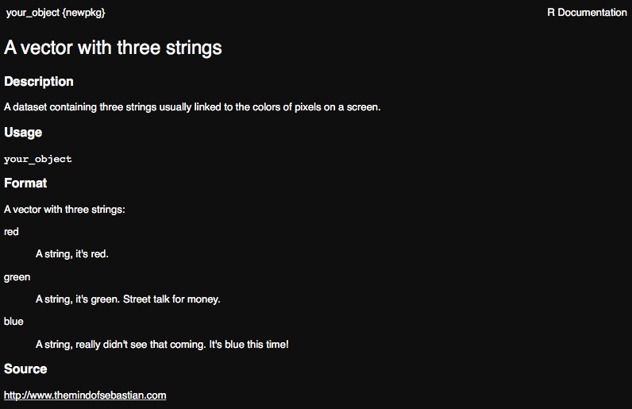

R packages
Sebastian DiLorenzo
10-Jun-2019


This is the R packages exercise from RaukR 2019. It will take you through creating an R package with code, data, documentation, creating or generating a correct DESCRIPTION and NAMESPACE, importing packages, checking your package for warnings and using C++ functions through Rcpp.
It is fine if you do not have time for the whole thing, as all components may not be important to you. You can always come back later :).
1 Installing dependencies
The first thing we want to do is install the dependencies required for the exercise.
install.packages(c("devtools","usethis" "roxygen2", "knitr", "rmarkdown", "reshape2", "Rcpp"))If you haven’t already, install Rstudio.
2 Create a package backbone
First of all we will create the standard files that are required in an R package.
Select File > New Project > New Directory > R package, give your package a name and click Create Project. This should trigger your Rstudio to reload, showing your package name in the top right corner, your packages file structure in the file viewer and a standard hello.R R code file in the editor.
3 Insert wondrous things
Now that we have a R package backbone lets fill it with stuff!
3.1 R code
Start by editing your hello.R file, you can rename it if you wish. Feel free to rewrite the function to perform some simple task. From adding two numbers to creating a basic plot from some input. It’s up to you!
Here is an example that I threw together:
trianguletter <- function(x) {
for(i in 1:x){
cat(rep( letters[i], times = i),"\n")
}
}When you are happy with your function, save it and load it using devtools::load_all() or the keyboard shortcut Ctrl/Cmd + Shift + L
Now test your function in the console!
trianguletter(12)## a
## b b
## c c c
## d d d d
## e e e e e
## f f f f f f
## g g g g g g g
## h h h h h h h h
## i i i i i i i i i
## j j j j j j j j j j
## k k k k k k k k k k k
## l l l l l l l l l l l lCongratulations! You have just created an R package that fulfills a function!
3.2 Data
Lets add some data to our package, create an R object with whatever information you want. A string, a vector or a data.frame, as long as you recognise it, it doesn’t matter. First we will save it to our data/ folder using usethis::use_data().
# A random object
your_object <- c('red','green','blue')
#Save to data
usethis::use_data(your_object)This created the data/ folder and your_object.rda inside it.
Now when our package is loaded, your_object will be made available to us. To test this, remove all objects from your working directory, and load all functions. Check that you can access the object, despite just removing it from your workspace.
# Clear workspace
rm(list=ls())
# Load all functions and data from our package
devtools::load_all()
# Check if we can access our saved object
your_object
[1] "red" "green" "blue"The data in data/ folder is available to the user, needs to be documented, and is where you would store data if the purpose of your package is to distribute one or more datasets in an R friendly way. If there is some data that you don’t want to make easily accessible to the users, AKA not document, but that your functions use, you can put it in sysdata.rda. Lets create a second object, like the last one it does not matter what it is. Use the same command as before to save the object, except this time specify that this data is intended for internal use.
# Create a second object
second_object <- "It works!"
# Save it to R/sysdata.rda
usethis::use_data(second_object, internal = TRUE)To check that this worked, clear your workspace and edit your packages function, the .R file, to include the object in some way. Load the package and see if it executes as expected.
# Clear workspace
rm(list=ls())# Example .R code edit
trianguletter <- function(x) {
for(i in 1:x){
cat(rep( letters[i], times = i),"\n")
}
# Check if second object can be called by our function
cat(second_object)
}# Load all functions and data from our package
devtools::load_all()# Test the function
trianguletter(5)## a
## b b
## c c c
## d d d d
## e e e e e
## It works!Great work! You have created external and internal datasets and shown that they can be used when your package is loaded in the console and in your packages own functions!
3.3 Documentation
Now that we have a function and a dataset, lets use roxygen2 to create some documentation for them.
3.3.1 Function documentation
As was discussed in the presentation, the roxygen2 documentation for a function is directly before it in so called “comment blocks”, or #'. Here is a brief refresher:
- Comment block :
#' - Tags :
@tagname@param: parameter@example: examples@return: what does the function return. The value field in R documentation@section: create any section you want
Go ahead and create documentation for your function. add at least a title, a description, multi-section details, the parameters, the expected return value or output and an example of how to use your function.
An example functional documentation:
#' A right sided triangle of alphabetic letters
#'
#' A right sided triangle of alphabetic letters
#'
#' This function takes a number as input and outputs an increasing
#' number of alphabetic letters on top of eachother, resembling
#' a right sided triangle.
#' @section Warning:
#' Not tested for numbers over 26!
#'
#' @param x A number.
#' @return Outputs to console. NULL object returned.
#' @examples
#' trianguletter(10)
trianguletter <- function(x) {
for(i in 1:x){
cat(rep( letters[i], times = i),"\n")
}
# Check if second object can be called by our function
cat(second_object)
}When you are satisfied with your documentation, build it using devtools::document(), or Ctrl/Cmd + Shift + D in Rstudio. This creates the .Rd file in man/ which is parsed by R when you request the functions documentation. Additionally, the first time you build documentation it will make some edits to your DESCRIPTION and check on your NAMESPACE.
Go ahead and preview your function as you would any method and make sure that it looks the way you were expecting.
?trianguletter
3.3.2 Data documentation
Data documentation is a bit different from functional documentation. Remember that you do not need to document datasets not intended for users, so don’t worry about sysdata.rda. What we want to document in this case is the data you created in man/your_object.rda, or whichever name you have given it.
The principle is very similar to functional documentation, but not all tags that are applicable to functions are applicable to data, and should not be used. Similarly, there are some tags that are applicable to data, but not to functions. Usually this is the information you would give a dataset:
- Data documentation
- Title
- Description
@format: what rows and variables are in the data?@source: where is the data from?
First of all, lets check what the output of requesting help for your dataset currently is.
?your_object## No documentation for 'your_object' in specified packages and libraries:
## you could try '??your_object'As expected, it is undocumented. Since we cannot add this information to the dataset file, .rda, lets create an R file in R/ called data.R and add the documentation there. The name we document has to be the same name as the dataset object you created earlier. Go ahead and document your dataset now.
#' A vector with three strings
#'
#' A dataset containing three strings usually linked to the
#' colors of pixels on a screen.
#'
#' @format A vector with three strings:
#' \describe{
#' \item{red}{A string, it's red.}
#' \item{green}{A string, it's green. Street talk for money.}
#' \item{blue}{A string, really didn't see that coming. It's blue this time!}
#' }
#' @source \url{http://www.themindofsebastian.com}
"your_object"Once you are happy with your documentation, save the file and run devtools::document(). Now check the help page for your dataset again.
?your_object
Well done! You have successfully created documentation for a function and a dataset and shown that it can be queried within R.
3.4 Vignette
While we are on the topic of documentation, lets check out how to get started writing your vignette. To initialise your vignette run usethis::use_vignette("packagename_vignette").
What this does:
- Creates the vignettes/ folder with packagename_vignettes.Rmd inside
- Edits your DESCRIPTION, adding
knitrtoSuggestsand as aVignetteBuilder.
Open the file vignettes/packagename-vignette.Rmd. Edit the header data, Vignette Title and Vignett Author, and create a minimal vignette for your function. Do run your function and show your dataset using knitr from the vignette. It can be as short as you want, however if you do this for a real package it should be a long form manual showing how your package can use its functions or data to perform the task it was designed for.
Note: To be able to use the functions of your package in the vignette you will need to install your package, the easiest way is to execute Cmd/Ctrl + Shift + B.
To preview your vignette while working on it, press the knit button in Rstudio.
Example vignette.Rmd:
---
title: "How to write more and more letters, in a triangle"
author: "Sebastian DiLorenzo"
date: "`r Sys.Date()`"
output: rmarkdown::html_vignette
vignette: >
%\VignetteIndexEntry{How to write more and more letters, in a triangle}
%\VignetteEngine{knitr::rmarkdown}
%\VignetteEncoding{UTF-8}
---
\```{r setup, include = FALSE}
knitr::opts_chunk$set(
collapse = TRUE,
comment = "#>"
)
# replace this with your package name
library(newpkg)
\```
# The greatest package for a very specific purpose
If you thought that it was impossible to write letters
alphabetically from top to bottom with each number represented
the same number of times asits position in the alphabet
- think again!
This package and its sole function, trianguletter, solves just this problem!
But you do not have to take my word for it, see for yourself:
\```{r,echo=T}
# With just a simple number we specify how long into the alphabet we go.
trianguletter(10)
# Also, this package has this random dataset:
your_object
\```
# Future plans
We plan do add features so that you can give it
a letter, rather than a number, and output a
bunch of numbers instead!Note: Because I am writing this in rmarkdown I added backslashes before the code or it would not render properly for this exercise instruction. In your rmarkdown there should not be backslashes before code chunks. See the \``` in the vignette code.
And the beautiful rendered version:
The preview you get when knitting the vignette.Rmd does not mean that the vignette has been created. To do this you can use devtools::build_vignettes() followed by devtools::document().
Reinstall the package again by executing Cmd/Ctrl + Shift + B and view the vignette with browseVignettes("packagename").
Once again, good work! Now you have written a short guide to your package that will be included wherever it goes!
3.5 DESCRIPTION
Now lets take a look at our DESCRIPTION file, at this point it should look similar to this:
Package: newpkg
Type: Package
Title: What the Package Does (Title Case)
Version: 0.1.0
Author: Who wrote it
Maintainer: The package maintainer <yourself@somewhere.net>
Description: More about what it does (maybe more than one line)
Use four spaces when indenting paragraphs within the Description.
License: What license is it under?
Encoding: UTF-8
LazyData: true
RoxygenNote: 6.0.1
Suggests: knitr,
rmarkdown
VignetteBuilder: knitrNote: The information can look slightly different depending on how the package was created, but the information is equivalent. For example you might see
Authors@Rinstead ofAuthorandMaintainer.
Looks pretty good but some information definitely needs to be updated if you are ever going to submit this to a repository.
Update the Title, Author, Maintainer, Description and License fields.
Just in case you don’t want to consider which license to give your package, why not choose one of the most common ones that were mentioned during the lecture?
- MIT : Free, but your license must be included in any following work.
- GPL-3 : Even more free. If someone uses your code, whatever they are doing must also be GPL compatible.
- CC0 : Totally free.
A good place to look at the meaning of licenses is https://tldrlegal.com.
Now that your DESCRIPTION is up to shape, we can move on to the NAMESPACE.
3.6 NAMESPACE
In the NAMESPACE we want to make our function available to the users and make sure that our package works well with other packages.
3.6.1 Import
First, lets import a function from a package and add its functionality to the function we created.
- Create a new file called R/utility.R. We won’t actually put any utility functions there but this is a good place for imports.
- Next add code to import the
meltfunction fromreshape2. This is in the form@importFrom pkg function.
#' @importFrom reshape2 melt
NULLTo update the NAMESPACE run devtools::document().
Note: Since we didn’t use
usethisto create your package you may get an error to the effect that roxygen2 was not used to create this NAMESPACE and it won’t be overwritten. In this case delete your NAMESPACE and rundevtools::document()again.
Now your NAMESPACE should look like this:
# Generated by roxygen2: do not edit by hand
importFrom(reshape2,melt)Great! If the melt command from reshape2 is ever used in your package, it will know which one to use. But for our package to use reshape2 we first have to import it in DESCRIPTION.
Add the Imports field somewhere in your DESCRIPTION.
Imports:
reshape2While Imports means that if someone installs your package it will automatically install reshape2 as well, regrettably it does not mean that if reshape2 is missing when we reinstall it locally it will be downloaded and installed. Luckily we installed it at the start of the exercise.
3.6.2 Export
When we imported reshape2 and roxygen2 recreated the NAMESPACE file, we sent a message to the package saying “We know what we are doing, you can take away the NAMESPACE kiddie-wheels”. These kiddie-wheels are specifically the export pattern that was there previously, basically exporting everything between heaven and earth.
exportPattern("^[^\\.]")Now our package isn’t exporting anything, and if you reinstall it with Ctrl/Cmd + Shift + B you will notice that it cannot find your function anymore. This is fine, and we are about to fix this, by exporting the function!
In your .R file, directly above the function, add the @export tag, then rebuild the documentation with devtools::document().
Have a look at your NAMESPACE again. You should find that your function is now being exported.
Finally, rebuild and install your package with Ctrl/Cmd + Shift + B.
You do not need to export your data, wether internal or not.
3.6.3 Testing the imported function
Now that we have added melt from reshape2 lets add it to our function. You can do this any way you like, or copy usage from the example function.
In this example the head of iris dataset before and after melt is viewed, to see that it had an effect.
#' A right sided triangle of alphabetic letters
#'
#' A right sided triangle of alphabetic letters
#'
#' This function takes a number as input and outputs an increasing
#' number of alphabetic letters on top of eachother, resembling
#' a right sided triangle.
#' @section Warning:
#' Not tested for numbers over 26!
#'
#' @param x A number.
#' @return Outputs to console. NULL object returned.
#' @examples
#' trianguletter(10)
#' @export
trianguletter <- function(x) {
for(i in 1:x){
cat(rep( letters[i], times = i),"\n")
}
# Check if second object can be called by our function
#cat(second_object)
#what iris dataset looks like
head(iris)
#Use melt and see what it looks like
head(melt(iris))
}Rebuild the package, Ctrl/Cmd + Shift + B. Since this loads the package you are working on, reshape2 should also be loaded. You can check that this is true in sessionInfo().
Test your function, does the output show that it can use melt?
Now, lets check that the NAMESPACE is doing what we want it to do, making sure that the correct melt is being used by our package. Lets define a new function, also named melt, which will be in our global environment.
melt <- function(x) {
cat("abc",x)}Now try your function again. Is it using the correct melt?
It should be!
Note: An alternative way of doing this is using Imports in DESCRIPTION and writing your code with strict package references. In our case
reshape2::melt(). This way you can circumvent usingroxygen2to add import tags toNAMESPACEif you want.
4 Checking your package
Now that we have a pretty complete package, lets run some checks on it. You can use the standard R CMD check pkgname from your terminal, or you can use devtools::check(), which we recommend, as it performs some additional operations such as updating the documentation and bundling the package before checking.
R CMD check results
0 errors | 0 warnings | 1 note
checking R code for possible problems ... NOTE
trianguletter: no visible global function definition for ‘head’
trianguletter: no visible binding for global variable ‘iris’
Undefined global functions or variables:
head iris
Consider adding
importFrom("datasets", "iris")
importFrom("utils", "head")
to your NAMESPACE file.Did you get any NOTEs, ERRORs or WARNINGs? I know I did! Among other things it didn’t like my usage of the iris dataset without specifying it in the NAMESPACE. Go ahead and try to fix whichever messages you received. Google if you need to.
On the odd chance that you didn’t get any check messages, try introducing an error, like creating an undocumented dataset or using a function that doesn’t exist. It’s easier to break things than to build them :).
5 src/ and Rcpp
R is not always the most efficient language, which is why it is great that we can integrate other code with our package. Either using ready made solutions, or by including a script file of another language in the package.
Here we will integrate the well developed Rcpp package to be able to use C++ code in our package.
Similarly to how we created the package, the first thing we want to do is setup our package to accept Rcpp. We can do this with usethis::use_rcpp() which does four things:
- Creates src/ folder, unless it already exists.
- Edits DESCRIPTION, adding
RcpptoImportsandLinkingTo. - Create and modify .gitignore to not include compiled files (useful if you connect your package to git)
- Let’s you know two roxygen tags that need to be included, like our documentation, somewhere in package.
Note: I received some warnings using
usethis::use_rcpp()but it didn’t seem to break anything.
usethis::use_rcpp()Lets include the roxygen tags in our utility.R file.
#' @useDynLib typicalr, .registration = TRUE
#' @importFrom Rcpp sourceCpp
NULLNow we are ready to create a C++ file. You can do this from Rstudio to generate a nice template, File > New file > C++ File. It should look something like this:
#include <Rcpp.h>
using namespace Rcpp;
// This is a simple example of exporting a C++ function to R. You can
// source this function into an R session using the Rcpp::sourceCpp
// function (or via the Source button on the editor toolbar). Learn
// more about Rcpp at:
//
// http://www.rcpp.org/
// http://adv-r.had.co.nz/Rcpp.html
// http://gallery.rcpp.org/
//
// [[Rcpp::export]]
NumericVector timesTwo(NumericVector x) {
return x * 2;
}
// You can include R code blocks in C++ files processed with sourceCpp
// (useful for testing and development). The R code will be automatically
// run after the compilation.
//
/*** R
timesTwo(42)
*/You should not mess with the header, unless you know what you are doing. Here you can write any C++ function you want, either do this or leave it as it is and we will use the included example function, timeTwo. The function is exported to R using // [[Rcpp::export]]. Importantly, this does not add the function to your NAMESPACE. Add documentation to your function in the same way as we have done previously, but with the C++ commenting style of //.
//' Multiply a number by two
//'
//' @param x A integer.
//' @export
// [[Rcpp::export]]
NumericVector timesTwo(NumericVector x) {
return x * 2;
}Save the file to your src/ directory and call pkgbuild::compile_dll(), which re-compiles the package. This is necessary in this special case due to some recent changes to roxygen. Now run devtools::document() to update your NAMESPACE. Lets install and restart using Cmd/Ctrl + Shift + B. This will create the file RcppExports.R in R/, which is what R uses to call your C++ function.
Test that your function works from console.
Your R package can now run C++ code, marvelous! Now you just need to learn C++ ;).
5.1 Check again!
Added a new component to the package have we? - Yoda
Perform devtools::check() again and fix any new messages.
6 Finish line
Well done! You have built a functional package. Maybe it is even time to update the version number in DESCRIPTION and take it out of development?
If you want to know even more about this topic, I recommend Hadley Wickhams excellent online resource http://r-pkgs.had.co.nz/check.html
7 Session info
## R version 3.6.0 (2019-04-26)
## Platform: x86_64-apple-darwin15.6.0 (64-bit)
## Running under: macOS Mojave 10.14.5
##
## Matrix products: default
## BLAS: /Library/Frameworks/R.framework/Versions/3.6/Resources/lib/libRblas.0.dylib
## LAPACK: /Library/Frameworks/R.framework/Versions/3.6/Resources/lib/libRlapack.dylib
##
## locale:
## [1] en_US.UTF-8/en_US.UTF-8/en_US.UTF-8/C/en_US.UTF-8/en_US.UTF-8
##
## attached base packages:
## [1] stats graphics grDevices utils datasets methods base
##
## other attached packages:
## [1] rmarkdown_1.13 roxygen2_6.1.1 usethis_1.5.0 devtools_2.0.2
## [5] captioner_2.2.3 bookdown_0.11 knitr_1.23
##
## loaded via a namespace (and not attached):
## [1] Rcpp_1.0.1 xml2_1.2.0 magrittr_1.5
## [4] pkgload_1.0.2 R6_2.4.0 rlang_0.3.4
## [7] stringr_1.4.0 tools_3.6.0 pkgbuild_1.0.3
## [10] xfun_0.7 sessioninfo_1.1.1 cli_1.1.0
## [13] withr_2.1.2 commonmark_1.7 remotes_2.0.4
## [16] htmltools_0.3.6 rprojroot_1.3-2 yaml_2.2.0
## [19] assertthat_0.2.1 digest_0.6.19 crayon_1.3.4
## [22] processx_3.3.1 callr_3.2.0 fs_1.3.1
## [25] ps_1.3.0 glue_1.3.1 memoise_1.1.0
## [28] evaluate_0.14 stringi_1.4.3 compiler_3.6.0
## [31] backports_1.1.4 desc_1.2.0 prettyunits_1.0.2Built on: 10-Jun-2019 at 23:09:59.
2019 • SciLifeLab • NBIS • RaukR